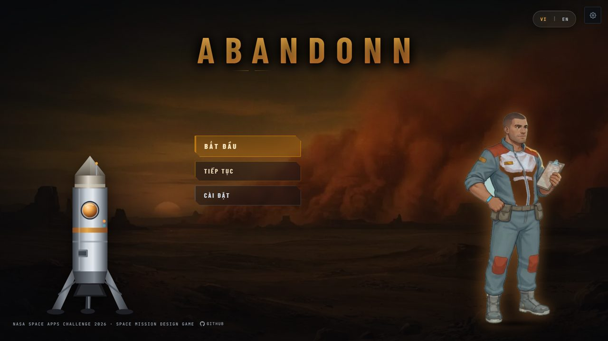
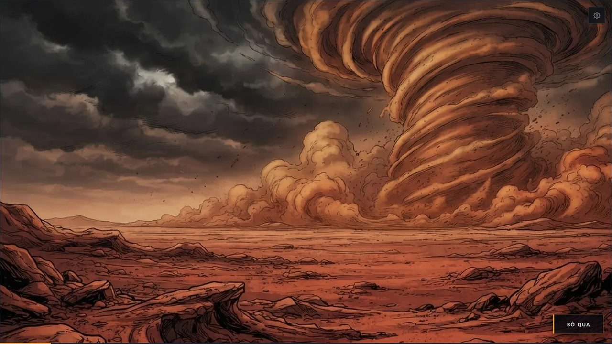
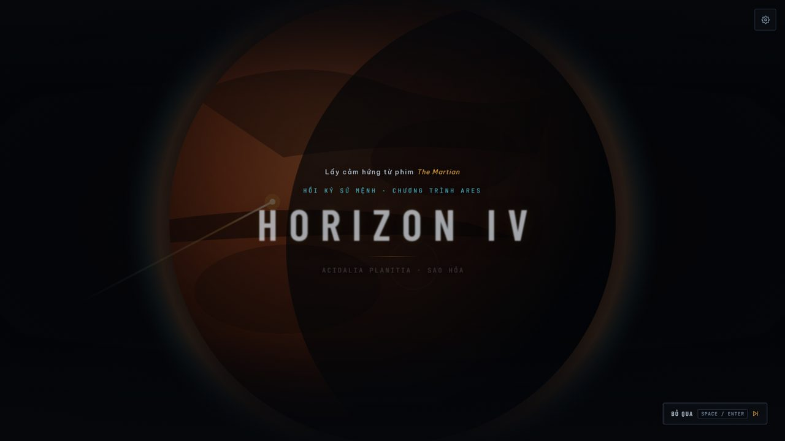

Design a mission to rescue one person. Then find out that every kilogram you left out was a decision made on behalf of someone else.

A student who is told the mass budget matters learns nothing. A student who is shown the exact kilogram that would have saved the crew learns it permanently.
You are the person left behind. Each sol you allocate one energy pool across heating, farming, water, repair, science and the radio. Dust storms cut generation, water recycling is a closed loop with losses, and every message to Earth travels through an orbiting relay.
When the distress signal reaches Earth, the game hands over the exact telemetry you earned: how many sols of life support remain, crop health, whether a dust storm is active, and the Earth–Mars distance that sets the light-time delay.
You enter a NASA-style Mission Design Lab. Launcher, transfer trajectory, power source, entry-descent-landing architecture, telecom, rations. Four engineering margins must survive a JPL Concept Maturity Level 4 review before launch.
Launcher capacity, cost, lead time. Mass margin must survive a 15 % reserve before a single instrument is chosen.
Bus, power source (solar versus RTG), batteries, entry-descent-landing architecture. A Mars array needs 2.3× the area of an Earth one for the same watts.
Downlink windows, proximity link for the beacon, and what the crew actually receives. Data that cannot be sent home does not exist.
| Real system | What the player does |
|---|---|
| Dust storm sensing (MEDA) | read opacity → cut array output |
| Oxygen generation (MOXIE) | trade power for O₂ reserves |
| Water recycling (ECLSS) | seal losses or lose the crop |
| Orbiter relay (MRO) | wait for a pass window to transmit |
| Deep Space Network | one-way light time 4–24 min |
| Surface EVA | walk to a beacon site and back |
Every action costs one of six resources: mass, power, calories, data, comms and time. Nothing is free, and nothing is wasted silently.

| Margin | Requirement | Why it bites |
|---|---|---|
| Dry mass | ≥ 35 % | systems always grow after design freeze |
| Power & thermal | ≥ 35 % | a solar array loses ~30 % in a dust storm |
| Telecom, deep space | ≥ 3 dB | closing the link across 215 M km |
| Telecom, proximity | ≥ 6 dB | locking the surface beacon during EDL |
| Delta-V | launcher ≥ trajectory | a fast transit needs 5.1 km/s, a medium launcher gives 4.1 |
| CML 4 gate | ≥ 80 % green, no red | one red item keeps the launch locked |
Difficulty is not more numbers — it is less freedom. Every choice removes options from the next one, and the engine re-scores the same design under a stricter criterion once the mission is already flying.

Design and Develop Science Missions (four mission segments) · Goddard Mission Design Lab workflow · JPL Concept Maturity Levels · NASA NSSDC Mars Fact Sheet · benchmarked against NASA’s Webb telescope design game. Every simplification we made is stated openly in the repository.
bersious.io.vn/nasa
github.com/tranminhngoc171-bot/space-mission-design-game
There is no perfect design. There is only the cost you chose to accept.